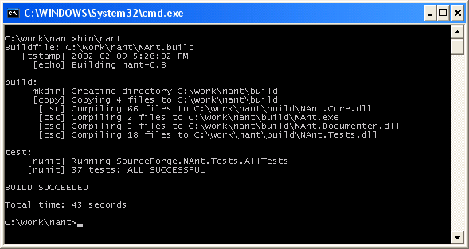

|
NAnt
|
v0.86-beta1 |
[This is preliminary documentation and subject to change.]
This topic will show you NAnt building itself. Before you begin make sure your system meets the system requirements.
bin\nant to build NAnt.If you did everything correctly you should see something like this:
